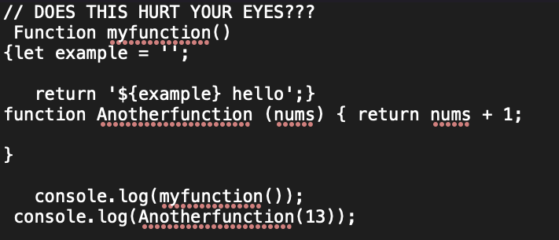

Even a glimpse of the code from a software engineer will tell you the style of the programmer. Perhaps they focus on having the most ‘efficient’ code and try to write it in as few lines as possible, adjusting their coding style and even reducing their comments to the bare minimum to do so. Or maybe they prefer to expand on their code so that anyone who looks at it would be able to figure out their thought process immediately. These types of people would likely space out their code and detail their comments, even adding sections in order to make their intent clear.
Similar to writing essays and reports, I believe that the way you write can improve the quality of your work even more than the content itself since it is important to also consider who else will read your work. If your code is the type of work that only you would understand, it would be near impossible to work collaboratively with anyone else. Software engineers should have a solid standard (even if it varies a bit from person to person) for their coding style in order to provide clarity for anyone who reads it, create an environment where it is easier to debug, and to not burn out the eyeballs of anyone who lays eyes upon it.
Have you ever read someone’s code and you have literally no idea what they were thinking when they wrote any of it? Or come across a time where you went through your own old code and couldn’t figure out why you wrote it that way? Having a coding standard for your comments would provide the context of specific lines of code while also keeping it neat and legible. It’s important to have a balance between your comments and code, you don’t want a situation where you have more comments than the code itself, or scenarios where you have none. It is common to refer to your own old code when you’ve written a good algorithm or solved a particularly difficult task. Well written comments in a proper coding standard would keep your code useable for your entire career.
Debugging and testing is an inevitable process than any programmer must go through, and there are even some people who have whole careers to specifically debug large and intricate programs. It becomes even more complicated when you have multiple people working on the same files. Having a standard coding style will allow the code to be easily read by anyone who needs to debug the program. This can be the difference of being able to debug an issue within a few minutes to having to spend days or even weeks on it.
Larger companies will implement their own standard for coding styles depending on their preferences. This allows all the coding style to be uniform and consistent. It’s important for software engineers to be adaptable and willing to conform to various styles that their employer may have. Being set in one’s ways would make it impossible to work with that programmer.
ESLint is a tool within IntelliJ that allows programmers to help enforce their coding style. It provides immediate feedback with the errors and green checkmark and will even tell you how to fix the coding style errors. Throughout the semester, ESLint has provided specific feedback that has allowed me to quickly debug my code as I write it. This allowed me to focus on the syntactical errors that are much more difficult to fix.